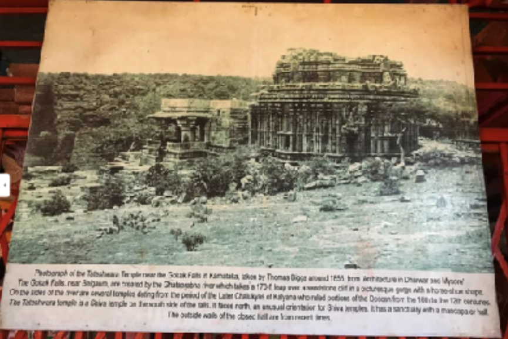

Mahalingeshwara Temple (mentioned as Tarakeshwar temple in an old
inscription found inside the temple belonging to the reign of Ratta Kartaveerya
III, dating back to 1153 AD) is an 11th-century Hindu temple dedicated to lord
shiva. It is located at Gokak Falls, Belgaum. It has been built in Kalyani
Chalukyan architectural style. It boasts of having a huge courtyard,
an Ardhamandapa and a spacious open mukhamantapa(frontal courtyard) and
a Garbhagriha(sanctum santorum) over which there exist a beautifully carved
shrine
History about the temple
The temple is dedicated to Lord Mahalingeshwara, built in the Kalyani Chalukyan
style, faces the cotton mill and flanks one side of the gorge. Locally known as
Tarakeshwara temple, the temple boasts of a huge courtyard and has a sanctum
sanctorum over which looms a tower that is adorned with exquisite carvings.
About Kalyani Chalukyan style
The basic floor plan is defined by the size of the shrine, the size of the
sanctum, the distribution of the building mass, and by the pradakshina (path for
circumambulation), if there is one.
Architectural articulation refers to the ornamental components that give shape
to the outer wall of the shrine. These include projections, recesses, and
representations that can produce a variety of patterns and outlines, either
stepped, stellate (star-shaped), or square.[21] If stepped (also called "stepped
diamond of projecting corners"), these components form five or seven
projections on each side of the shrine, where all but the central one are
projecting corners (projections with two full faces created by two recesses, left
and right, that are at right angles with each other).

Significance
Devotees visit this temple to seek fulfillment of the following:
Mahalingeshwara Temple (mentioned as Tarakeshwar temple in an
old inscription found inside the temple belonging to the reign of Ratta
Kartaveerya III, dating back to 1153 AD) is an 11th-century Hindu
temple dedicated to lord shiva.
Salvation Wealth Relief from diseases Purchase of vehicles Gain
Knowledge
How To Reach Mahalingeshwar Temple
Karnataka
Airport
The Bangalore Airport is the main airport in Karnataka. It is very well
connected to the rest of India.
Railways
Ghataprabha Railway Stationnear Gokak is the nearest railhead.
Road
Gokak is 65 km by road from Belgaum and is well connected by
public transport.